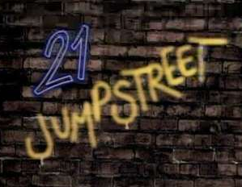
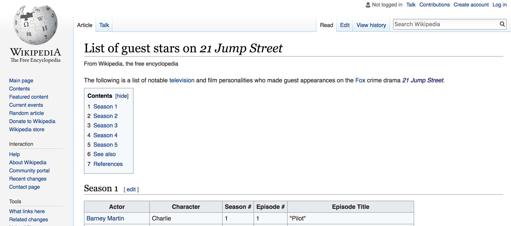
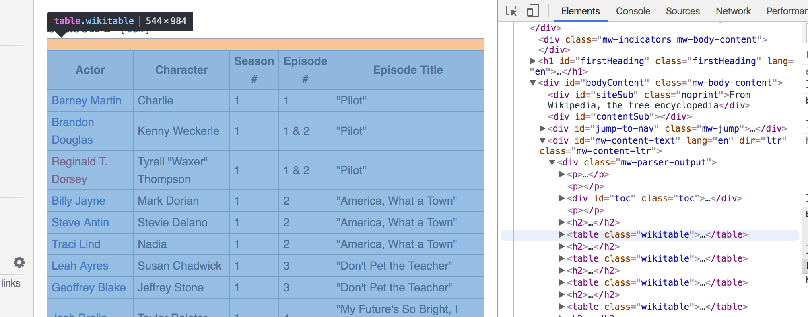

Scraping the Street¶
In [1]:
%%HTML
<iframe width="560" height="315" src="https://www.youtube.com/embed/5GcOXA_41MU" frameborder="0" allow="autoplay; encrypted-media" allowfullscreen></iframe>

One of the most important television shows of all time was 21 Jump Street. The show gave birth to stars like Johnny Depp, Richard Greico, and Holly Robinson Peete. The show also spoke to the youth of the late 80’s and early 90’s with a crew of undercover cops tackling law breakers.
Wikipedia List of Guest Stars¶

Wikipedia has a page containing information on the list of guest stars for five seasons of 21 Jump Street. Our goal is to create a table with the information on all the guest stars.
In [1]:
l = [1, 2, 3, 4, 5]
In [2]:
l[0]
Out[2]:
1
In [3]:
l[:3]
Out[3]:
[1, 2, 3]
In [4]:
l[::2]
Out[4]:
[1, 3, 5]
In [5]:
%%HTML
<h1>This a header</h1>
<p>This is a paragraph</p>
<p class = "special">This is a paragraph with an attribute</p>
This a header
This is a paragraph
This is a paragraph with an attribute
In [6]:
import requests
from bs4 import BeautifulSoup
In [7]:
url = 'https://en.wikipedia.org/wiki/List_of_guest_stars_on_21_Jump_Street'
In [8]:
page = requests.get(url)
In [9]:
page
Out[9]:
<Response [200]>
In [10]:
soup = BeautifulSoup(page.text, 'html.parser')
In [11]:
soup.title.text
Out[11]:
'List of guest stars on 21 Jump Street - Wikipedia'
In [12]:
soup.title.string
Out[12]:
'List of guest stars on 21 Jump Street - Wikipedia'
In [13]:
soup.a
Out[13]:
<a id="top"></a>
In [14]:
soup.div
Out[14]:
<div class="noprint" id="mw-page-base"></div>
In [15]:
soup.find_all('a')
Out[15]:
[<a id="top"></a>,
<a href="#mw-head">navigation</a>,
<a href="#p-search">search</a>,
<a class="mw-redirect" href="/wiki/Television_personality" title="Television personality">television</a>,
<a href="/wiki/Fox_Broadcasting_Company" title="Fox Broadcasting Company">Fox</a>,
<a href="/wiki/21_Jump_Street" title="21 Jump Street">21 Jump Street</a>,
<a href="#Season_1"><span class="tocnumber">1</span> <span class="toctext">Season 1</span></a>,
<a href="#Season_2"><span class="tocnumber">2</span> <span class="toctext">Season 2</span></a>,
<a href="#Season_3"><span class="tocnumber">3</span> <span class="toctext">Season 3</span></a>,
<a href="#Season_4"><span class="tocnumber">4</span> <span class="toctext">Season 4</span></a>,
<a href="#Season_5"><span class="tocnumber">5</span> <span class="toctext">Season 5</span></a>,
<a href="#See_also"><span class="tocnumber">6</span> <span class="toctext">See also</span></a>,
<a href="#References"><span class="tocnumber">7</span> <span class="toctext">References</span></a>,
<a href="/w/index.php?title=List_of_guest_stars_on_21_Jump_Street&action=edit&section=1" title="Edit section: Season 1">edit</a>,
<a href="/wiki/Barney_Martin" title="Barney Martin">Barney Martin</a>,
<a href="/wiki/Brandon_Douglas" title="Brandon Douglas">Brandon Douglas</a>,
<a class="new" href="/w/index.php?title=Reginald_T._Dorsey&action=edit&redlink=1" title="Reginald T. Dorsey (page does not exist)">Reginald T. Dorsey</a>,
<a href="/wiki/Billy_Jayne" title="Billy Jayne">Billy Jayne</a>,
<a href="/wiki/Steve_Antin" title="Steve Antin">Steve Antin</a>,
<a href="/wiki/Traci_Lind" title="Traci Lind">Traci Lind</a>,
<a href="/wiki/Leah_Ayres" title="Leah Ayres">Leah Ayres</a>,
<a href="/wiki/Geoffrey_Blake_(actor)" title="Geoffrey Blake (actor)">Geoffrey Blake</a>,
<a href="/wiki/Josh_Brolin" title="Josh Brolin">Josh Brolin</a>,
<a class="new" href="/w/index.php?title=Jamie_Bozian&action=edit&redlink=1" title="Jamie Bozian (page does not exist)">Jamie Bozian</a>,
<a href="/wiki/John_D%27Aquino" title="John D'Aquino">John D'Aquino</a>,
<a class="new" href="/w/index.php?title=Troy_Byer&action=edit&redlink=1" title="Troy Byer (page does not exist)">Troy Byer</a>,
<a href="/wiki/Lezlie_Deane" title="Lezlie Deane">Lezlie Deane</a>,
<a href="/wiki/Blair_Underwood" title="Blair Underwood">Blair Underwood</a>,
<a href="/wiki/Robert_Picardo" title="Robert Picardo">Robert Picardo</a>,
<a href="/wiki/Scott_Schwartz" title="Scott Schwartz">Scott Schwartz</a>,
<a href="/wiki/Liane_Curtis" title="Liane Curtis">Liane Curtis</a>,
<a href="/wiki/Byron_Thames" title="Byron Thames">Byron Thames</a>,
<a href="/wiki/Sherilyn_Fenn" title="Sherilyn Fenn">Sherilyn Fenn</a>,
<a href="/wiki/Christopher_Heyerdahl" title="Christopher Heyerdahl">Christopher Heyerdahl</a>,
<a href="/wiki/Kurtwood_Smith" title="Kurtwood Smith">Kurtwood Smith</a>,
<a href="/wiki/Sarah_G._Buxton" title="Sarah G. Buxton">Sarah G. Buxton</a>,
<a href="/wiki/Jason_Priestley" title="Jason Priestley">Jason Priestley</a>,
<a href="/w/index.php?title=List_of_guest_stars_on_21_Jump_Street&action=edit&section=2" title="Edit section: Season 2">edit</a>,
<a href="/wiki/Kurtwood_Smith" title="Kurtwood Smith">Kurtwood Smith</a>,
<a href="/wiki/Ray_Walston" title="Ray Walston">Ray Walston</a>,
<a href="/wiki/Pauly_Shore" title="Pauly Shore">Pauly Shore</a>,
<a href="/wiki/Shannon_Tweed" title="Shannon Tweed">Shannon Tweed</a>,
<a href="/wiki/Lochlyn_Munro" title="Lochlyn Munro">Lochlyn Munro</a>,
<a href="/wiki/Mindy_Cohn" title="Mindy Cohn">Mindy Cohn</a>,
<a href="/wiki/Kent_McCord" title="Kent McCord">Kent McCord</a>,
<a href="/wiki/Don_S._Davis" title="Don S. Davis">Don S. Davis</a>,
<a class="mw-redirect" href="/wiki/Tom_Wright_(actor)" title="Tom Wright (actor)">Tom Wright</a>,
<a href="/wiki/Jean_Sagal" title="Jean Sagal">Jean Sagal</a>,
<a href="/wiki/Liz_Sagal" title="Liz Sagal">Liz Sagal</a>,
<a href="/wiki/Deborah_Lacey" title="Deborah Lacey">Deborah Lacey</a>,
<a href="/wiki/Bradford_English" title="Bradford English">Bradford English</a>,
<a href="/wiki/Christina_Applegate" title="Christina Applegate">Christina Applegate</a>,
<a href="/wiki/Peter_Berg" title="Peter Berg">Peter Berg</a>,
<a href="/wiki/Gabriel_Jarret" title="Gabriel Jarret">Gabriel Jarret</a>,
<a href="/wiki/Bruce_French_(actor)" title="Bruce French (actor)">Bruce French</a>,
<a href="/wiki/Dann_Florek" title="Dann Florek">Dann Florek</a>,
<a href="/wiki/Gregory_Itzin" title="Gregory Itzin">Gregory Itzin</a>,
<a href="/wiki/Brad_Pitt" title="Brad Pitt">Brad Pitt</a>,
<a href="/wiki/Don_S._Davis" title="Don S. Davis">Don S. Davis</a>,
<a href="/wiki/Sam_Anderson" title="Sam Anderson">Sam Anderson</a>,
<a href="/w/index.php?title=List_of_guest_stars_on_21_Jump_Street&action=edit&section=3" title="Edit section: Season 3">edit</a>,
<a href="/wiki/Leo_Rossi" title="Leo Rossi">Leo Rossi</a>,
<a href="/wiki/Peri_Gilpin" title="Peri Gilpin">Peri Gilpin</a>,
<a href="/wiki/Kelly_Hu" title="Kelly Hu">Kelly Hu</a>,
<a href="/wiki/Russell_Wong" title="Russell Wong">Russell Wong</a>,
<a href="/wiki/Christopher_Titus" title="Christopher Titus">Christopher Titus</a>,
<a href="/wiki/Dom_DeLuise" title="Dom DeLuise">Dom DeLuise</a>,
<a class="new" href="/w/index.php?title=Kehli_O%27Byrne&action=edit&redlink=1" title="Kehli O'Byrne (page does not exist)">Kehli O'Byrne</a>,
<a href="/wiki/Larenz_Tate" title="Larenz Tate">Larenz Tate</a>,
<a href="/wiki/Maia_Brewton" title="Maia Brewton">Maia Brewton</a>,
<a href="/wiki/Michael_DeLuise" title="Michael DeLuise">Michael DeLuise</a>,
<a href="/wiki/Mario_Van_Peebles" title="Mario Van Peebles">Mario Van Peebles</a>,
<a href="#endnote_reference_name_A">*</a>,
<a href="/wiki/Bridget_Fonda" title="Bridget Fonda">Bridget Fonda</a>,
<a href="/wiki/Conor_O%27Farrell" title="Conor O'Farrell">Conor O'Farrell</a>,
<a href="/wiki/Andrew_Lauer" title="Andrew Lauer">Andrew Lauer</a>,
<a class="new" href="/w/index.php?title=Claude_Brooks&action=edit&redlink=1" title="Claude Brooks (page does not exist)">Claude Brooks</a>,
<a href="/wiki/Margot_Rose" title="Margot Rose">Margot Rose</a>,
<a href="/w/index.php?title=List_of_guest_stars_on_21_Jump_Street&action=edit&section=4" title="Edit section: Season 4">edit</a>,
<a href="/wiki/Don_S._Davis" title="Don S. Davis">Don S. Davis</a>,
<a href="/wiki/Robert_Romanus" title="Robert Romanus">Robert Romanus</a>,
<a href="/wiki/Rob_Estes" title="Rob Estes">Rob Estes</a>,
<a href="/wiki/Stu_Nahan" title="Stu Nahan">Stu Nahan</a>,
<a href="/wiki/Mario_Van_Peebles" title="Mario Van Peebles">Mario Van Peebles</a>,
<a href="#endnote_reference_name_A">*</a>,
<a href="/wiki/Thomas_Haden_Church" title="Thomas Haden Church">Thomas Haden Church</a>,
<a href="/wiki/Billy_Warlock" title="Billy Warlock">Billy Warlock</a>,
<a href="/wiki/Tony_Plana" title="Tony Plana">Tony Plana</a>,
<a href="/wiki/Julie_Warner" title="Julie Warner">Julie Warner</a>,
<a href="/wiki/Barbara_Tarbuck" title="Barbara Tarbuck">Barbara Tarbuck</a>,
<a href="/wiki/Kamala_Lopez" title="Kamala Lopez">Kamala Lopez</a>,
<a href="/wiki/Pamela_Adlon" title="Pamela Adlon">Pamela Adlon</a>,
<a href="/wiki/Christine_Elise" title="Christine Elise">Christine Elise</a>,
<a href="/wiki/Robyn_Lively" title="Robyn Lively">Robyn Lively</a>,
<a href="/wiki/Vince_Vaughn" title="Vince Vaughn">Vince Vaughn</a>,
<a href="/wiki/Mickey_Jones" title="Mickey Jones">Mickey Jones</a>,
<a href="/wiki/Ray_Baker_(actor)" title="Ray Baker (actor)">Ray Baker</a>,
<a href="/wiki/Keith_Coogan" title="Keith Coogan">Keith Coogan</a>,
<a href="/wiki/Shannen_Doherty" title="Shannen Doherty">Shannen Doherty</a>,
<a href="/wiki/Wallace_Langham" title="Wallace Langham">Wallace Langham</a>,
<a href="/wiki/Rosie_Perez" title="Rosie Perez">Rosie Perez</a>,
<a href="/wiki/Don_S._Davis" title="Don S. Davis">Don S. Davis</a>,
<a href="/wiki/Chick_Hearn" title="Chick Hearn">Chick Hearn</a>,
<a href="/wiki/Kareem_Abdul-Jabbar" title="Kareem Abdul-Jabbar">Kareem Abdul-Jabbar</a>,
<a class="mw-redirect" href="/wiki/John_Waters_(filmmaker)" title="John Waters (filmmaker)">John Waters</a>,
<a href="/wiki/John_Pyper-Ferguson" title="John Pyper-Ferguson">John Pyper-Ferguson</a>,
<a href="/wiki/Diedrich_Bader" title="Diedrich Bader">Diedrich Bader</a>,
<a href="/wiki/Kelly_Perine" title="Kelly Perine">Kelly Perine</a>,
<a href="/wiki/Kristin_Dattilo" title="Kristin Dattilo">Kristin Dattilo</a>,
<a href="/w/index.php?title=List_of_guest_stars_on_21_Jump_Street&action=edit&section=5" title="Edit section: Season 5">edit</a>,
<a href="/wiki/Lisa_Dean_Ryan" title="Lisa Dean Ryan">Lisa Dean Ryan</a>,
<a href="/wiki/Scott_Grimes" title="Scott Grimes">Scott Grimes</a>,
<a class="mw-redirect" href="/wiki/Brigitta_Dau" title="Brigitta Dau">Brigitta Dau</a>,
<a href="/wiki/Tony_Dakota" title="Tony Dakota">Tony Dakota</a>,
<a href="/wiki/Perrey_Reeves" title="Perrey Reeves">Perrey Reeves</a>,
<a class="new" href="/w/index.php?title=Johannah_Newmarch&action=edit&redlink=1" title="Johannah Newmarch (page does not exist)">Johannah Newmarch</a>,
<a href="/wiki/Richard_Leacock" title="Richard Leacock">Richard Leacock</a>,
<a class="new" href="/w/index.php?title=Pat_Bermel&action=edit&redlink=1" title="Pat Bermel (page does not exist)">Pat Bermel</a>,
<a href="/wiki/Deanna_Milligan" title="Deanna Milligan">Deanna Milligan</a>,
<a href="/wiki/Peter_Outerbridge" title="Peter Outerbridge">Peter Outerbridge</a>,
<a class="new" href="/w/index.php?title=Don_MacKay&action=edit&redlink=1" title="Don MacKay (page does not exist)">Don MacKay</a>,
<a href="/wiki/Terence_Kelly_(actor)" title="Terence Kelly (actor)">Terence Kelly</a>,
<a href="/wiki/Merrilyn_Gann" title="Merrilyn Gann">Merrilyn Gann</a>,
<a href="/wiki/Ocean_Hellman" title="Ocean Hellman">Ocean Hellman</a>,
<a href="/wiki/Lochlyn_Munro" title="Lochlyn Munro">Lochlyn Munro</a>,
<a href="/wiki/Leslie_Carlson" title="Leslie Carlson">Leslie Carlson</a>,
<a href="/wiki/David_DeLuise" title="David DeLuise">David DeLuise</a>,
<a href="/wiki/Kamala_Lopez" title="Kamala Lopez">Kamala Lopez</a>,
<a href="/wiki/Don_S._Davis" title="Don S. Davis">Don S. Davis</a>,
<a href="/wiki/Jada_Pinkett_Smith" title="Jada Pinkett Smith">Jada Pinkett Smith</a>,
<a href="#ref_reference_name_A">^*</a>,
<a href="/w/index.php?title=List_of_guest_stars_on_21_Jump_Street&action=edit&section=6" title="Edit section: See also">edit</a>,
<a href="/wiki/Jump_Street_(franchise)" title="Jump Street (franchise)">Jump Street</a>,
<a href="/w/index.php?title=List_of_guest_stars_on_21_Jump_Street&action=edit&section=7" title="Edit section: References">edit</a>,
<a class="external text" href="http://www.imdb.com/title/tt0092312/" rel="nofollow"><i>21 Jump Street</i></a>,
<a href="/wiki/IMDb" title="IMDb">IMDb</a>,
<a href="/wiki/Template:21_Jump_Street" title="Template:21 Jump Street"><abbr style=";;background:none transparent;border:none;-moz-box-shadow:none;-webkit-box-shadow:none;box-shadow:none;" title="View this template">v</abbr></a>,
<a href="/wiki/Template_talk:21_Jump_Street" title="Template talk:21 Jump Street"><abbr style=";;background:none transparent;border:none;-moz-box-shadow:none;-webkit-box-shadow:none;box-shadow:none;" title="Discuss this template">t</abbr></a>,
<a class="external text" href="//en.wikipedia.org/w/index.php?title=Template:21_Jump_Street&action=edit"><abbr style=";;background:none transparent;border:none;-moz-box-shadow:none;-webkit-box-shadow:none;box-shadow:none;" title="Edit this template">e</abbr></a>,
<a href="/wiki/Jump_Street_(franchise)" title="Jump Street (franchise)">Jump Street</a>,
<a href="/wiki/21_Jump_Street" title="21 Jump Street">21 Jump Street</a>,
<a href="/wiki/List_of_21_Jump_Street_episodes" title="List of 21 Jump Street episodes">episodes</a>,
<a class="mw-selflink selflink">guest stars</a>,
<a href="/wiki/Booker_(TV_series)" title="Booker (TV series)">Booker</a>,
<a href="/wiki/21_Jump_Street_(film)" title="21 Jump Street (film)">21 Jump Street</a>,
<a href="/wiki/22_Jump_Street" title="22 Jump Street">22 Jump Street</a>,
<a href="/wiki/22_Jump_Street_(Original_Motion_Picture_Score)" title="22 Jump Street (Original Motion Picture Score)">Score</a>,
<a dir="ltr" href="https://en.wikipedia.org/w/index.php?title=List_of_guest_stars_on_21_Jump_Street&oldid=820109238">https://en.wikipedia.org/w/index.php?title=List_of_guest_stars_on_21_Jump_Street&oldid=820109238</a>,
<a href="/wiki/Help:Category" title="Help:Category">Categories</a>,
<a href="/wiki/Category:21_Jump_Street" title="Category:21 Jump Street">21 Jump Street</a>,
<a href="/wiki/Category:Lists_of_actors_by_role" title="Category:Lists of actors by role">Lists of actors by role</a>,
<a href="/wiki/Category:Lists_of_American_television_series_characters" title="Category:Lists of American television series characters">Lists of American television series characters</a>,
<a href="/wiki/Category:Lists_of_drama_television_characters" title="Category:Lists of drama television characters">Lists of drama television characters</a>,
<a href="/wiki/Category:Lists_of_guest_appearances_in_television" title="Category:Lists of guest appearances in television">Lists of guest appearances in television</a>,
<a accesskey="n" href="/wiki/Special:MyTalk" title="Discussion about edits from this IP address [n]">Talk</a>,
<a accesskey="y" href="/wiki/Special:MyContributions" title="A list of edits made from this IP address [y]">Contributions</a>,
<a href="/w/index.php?title=Special:CreateAccount&returnto=List+of+guest+stars+on+21+Jump+Street" title="You are encouraged to create an account and log in; however, it is not mandatory">Create account</a>,
<a accesskey="o" href="/w/index.php?title=Special:UserLogin&returnto=List+of+guest+stars+on+21+Jump+Street" title="You're encouraged to log in; however, it's not mandatory. [o]">Log in</a>,
<a accesskey="c" href="/wiki/List_of_guest_stars_on_21_Jump_Street" title="View the content page [c]">Article</a>,
<a accesskey="t" href="/wiki/Talk:List_of_guest_stars_on_21_Jump_Street" rel="discussion" title="Discussion about the content page [t]">Talk</a>,
<a href="/wiki/List_of_guest_stars_on_21_Jump_Street">Read</a>,
<a accesskey="e" href="/w/index.php?title=List_of_guest_stars_on_21_Jump_Street&action=edit" title="Edit this page [e]">Edit</a>,
<a accesskey="h" href="/w/index.php?title=List_of_guest_stars_on_21_Jump_Street&action=history" title="Past revisions of this page [h]">View history</a>,
<a class="mw-wiki-logo" href="/wiki/Main_Page" title="Visit the main page"></a>,
<a accesskey="z" href="/wiki/Main_Page" title="Visit the main page [z]">Main page</a>,
<a href="/wiki/Portal:Contents" title="Guides to browsing Wikipedia">Contents</a>,
<a href="/wiki/Portal:Featured_content" title="Featured content – the best of Wikipedia">Featured content</a>,
<a href="/wiki/Portal:Current_events" title="Find background information on current events">Current events</a>,
<a accesskey="x" href="/wiki/Special:Random" title="Load a random article [x]">Random article</a>,
<a href="https://donate.wikimedia.org/wiki/Special:FundraiserRedirector?utm_source=donate&utm_medium=sidebar&utm_campaign=C13_en.wikipedia.org&uselang=en" title="Support us">Donate to Wikipedia</a>,
<a href="//shop.wikimedia.org" title="Visit the Wikipedia store">Wikipedia store</a>,
<a href="/wiki/Help:Contents" title="Guidance on how to use and edit Wikipedia">Help</a>,
<a href="/wiki/Wikipedia:About" title="Find out about Wikipedia">About Wikipedia</a>,
<a href="/wiki/Wikipedia:Community_portal" title="About the project, what you can do, where to find things">Community portal</a>,
<a accesskey="r" href="/wiki/Special:RecentChanges" title="A list of recent changes in the wiki [r]">Recent changes</a>,
<a href="//en.wikipedia.org/wiki/Wikipedia:Contact_us" title="How to contact Wikipedia">Contact page</a>,
<a accesskey="j" href="/wiki/Special:WhatLinksHere/List_of_guest_stars_on_21_Jump_Street" title="List of all English Wikipedia pages containing links to this page [j]">What links here</a>,
<a accesskey="k" href="/wiki/Special:RecentChangesLinked/List_of_guest_stars_on_21_Jump_Street" rel="nofollow" title="Recent changes in pages linked from this page [k]">Related changes</a>,
<a accesskey="u" href="/wiki/Wikipedia:File_Upload_Wizard" title="Upload files [u]">Upload file</a>,
<a accesskey="q" href="/wiki/Special:SpecialPages" title="A list of all special pages [q]">Special pages</a>,
<a href="/w/index.php?title=List_of_guest_stars_on_21_Jump_Street&oldid=820109238" title="Permanent link to this revision of the page">Permanent link</a>,
<a href="/w/index.php?title=List_of_guest_stars_on_21_Jump_Street&action=info" title="More information about this page">Page information</a>,
<a accesskey="g" href="https://www.wikidata.org/wiki/Special:EntityPage/Q6621947" title="Link to connected data repository item [g]">Wikidata item</a>,
<a href="/w/index.php?title=Special:CiteThisPage&page=List_of_guest_stars_on_21_Jump_Street&id=820109238" title="Information on how to cite this page">Cite this page</a>,
<a href="/w/index.php?title=Special:Book&bookcmd=book_creator&referer=List+of+guest+stars+on+21+Jump+Street">Create a book</a>,
<a href="/w/index.php?title=Special:ElectronPdf&page=List+of+guest+stars+on+21+Jump+Street&action=show-download-screen">Download as PDF</a>,
<a accesskey="p" href="/w/index.php?title=List_of_guest_stars_on_21_Jump_Street&printable=yes" title="Printable version of this page [p]">Printable version</a>,
<a class="wbc-editpage" href="https://www.wikidata.org/wiki/Special:EntityPage/Q6621947#sitelinks-wikipedia" title="Add interlanguage links">Add links</a>,
<a href="//en.wikipedia.org/wiki/Wikipedia:Text_of_Creative_Commons_Attribution-ShareAlike_3.0_Unported_License" rel="license">Creative Commons Attribution-ShareAlike License</a>,
<a href="//creativecommons.org/licenses/by-sa/3.0/" rel="license" style="display:none;"></a>,
<a href="//wikimediafoundation.org/wiki/Terms_of_Use">Terms of Use</a>,
<a href="//wikimediafoundation.org/wiki/Privacy_policy">Privacy Policy</a>,
<a href="//www.wikimediafoundation.org/">Wikimedia Foundation, Inc.</a>,
<a class="extiw" href="https://wikimediafoundation.org/wiki/Privacy_policy" title="wmf:Privacy policy">Privacy policy</a>,
<a href="/wiki/Wikipedia:About" title="Wikipedia:About">About Wikipedia</a>,
<a href="/wiki/Wikipedia:General_disclaimer" title="Wikipedia:General disclaimer">Disclaimers</a>,
<a href="//en.wikipedia.org/wiki/Wikipedia:Contact_us">Contact Wikipedia</a>,
<a href="https://www.mediawiki.org/wiki/Special:MyLanguage/How_to_contribute">Developers</a>,
<a href="https://wikimediafoundation.org/wiki/Cookie_statement">Cookie statement</a>,
<a class="noprint stopMobileRedirectToggle" href="//en.m.wikipedia.org/w/index.php?title=List_of_guest_stars_on_21_Jump_Street&mobileaction=toggle_view_mobile">Mobile view</a>,
<a href="https://wikimediafoundation.org/"><img alt="Wikimedia Foundation" height="31" src="/static/images/wikimedia-button.png" srcset="/static/images/wikimedia-button-1.5x.png 1.5x, /static/images/wikimedia-button-2x.png 2x" width="88"/></a>,
<a href="//www.mediawiki.org/"><img alt="Powered by MediaWiki" height="31" src="/static/images/poweredby_mediawiki_88x31.png" srcset="/static/images/poweredby_mediawiki_132x47.png 1.5x, /static/images/poweredby_mediawiki_176x62.png 2x" width="88"/></a>]
In [16]:
all_links = soup.find_all("a")
for link in all_links:
print(link.get("href"))
None
#mw-head
#p-search
/wiki/Television_personality
/wiki/Fox_Broadcasting_Company
/wiki/21_Jump_Street
#Season_1
#Season_2
#Season_3
#Season_4
#Season_5
#See_also
#References
/w/index.php?title=List_of_guest_stars_on_21_Jump_Street&action=edit§ion=1
/wiki/Barney_Martin
/wiki/Brandon_Douglas
/w/index.php?title=Reginald_T._Dorsey&action=edit&redlink=1
/wiki/Billy_Jayne
/wiki/Steve_Antin
/wiki/Traci_Lind
/wiki/Leah_Ayres
/wiki/Geoffrey_Blake_(actor)
/wiki/Josh_Brolin
/w/index.php?title=Jamie_Bozian&action=edit&redlink=1
/wiki/John_D%27Aquino
/w/index.php?title=Troy_Byer&action=edit&redlink=1
/wiki/Lezlie_Deane
/wiki/Blair_Underwood
/wiki/Robert_Picardo
/wiki/Scott_Schwartz
/wiki/Liane_Curtis
/wiki/Byron_Thames
/wiki/Sherilyn_Fenn
/wiki/Christopher_Heyerdahl
/wiki/Kurtwood_Smith
/wiki/Sarah_G._Buxton
/wiki/Jason_Priestley
/w/index.php?title=List_of_guest_stars_on_21_Jump_Street&action=edit§ion=2
/wiki/Kurtwood_Smith
/wiki/Ray_Walston
/wiki/Pauly_Shore
/wiki/Shannon_Tweed
/wiki/Lochlyn_Munro
/wiki/Mindy_Cohn
/wiki/Kent_McCord
/wiki/Don_S._Davis
/wiki/Tom_Wright_(actor)
/wiki/Jean_Sagal
/wiki/Liz_Sagal
/wiki/Deborah_Lacey
/wiki/Bradford_English
/wiki/Christina_Applegate
/wiki/Peter_Berg
/wiki/Gabriel_Jarret
/wiki/Bruce_French_(actor)
/wiki/Dann_Florek
/wiki/Gregory_Itzin
/wiki/Brad_Pitt
/wiki/Don_S._Davis
/wiki/Sam_Anderson
/w/index.php?title=List_of_guest_stars_on_21_Jump_Street&action=edit§ion=3
/wiki/Leo_Rossi
/wiki/Peri_Gilpin
/wiki/Kelly_Hu
/wiki/Russell_Wong
/wiki/Christopher_Titus
/wiki/Dom_DeLuise
/w/index.php?title=Kehli_O%27Byrne&action=edit&redlink=1
/wiki/Larenz_Tate
/wiki/Maia_Brewton
/wiki/Michael_DeLuise
/wiki/Mario_Van_Peebles
#endnote_reference_name_A
/wiki/Bridget_Fonda
/wiki/Conor_O%27Farrell
/wiki/Andrew_Lauer
/w/index.php?title=Claude_Brooks&action=edit&redlink=1
/wiki/Margot_Rose
/w/index.php?title=List_of_guest_stars_on_21_Jump_Street&action=edit§ion=4
/wiki/Don_S._Davis
/wiki/Robert_Romanus
/wiki/Rob_Estes
/wiki/Stu_Nahan
/wiki/Mario_Van_Peebles
#endnote_reference_name_A
/wiki/Thomas_Haden_Church
/wiki/Billy_Warlock
/wiki/Tony_Plana
/wiki/Julie_Warner
/wiki/Barbara_Tarbuck
/wiki/Kamala_Lopez
/wiki/Pamela_Adlon
/wiki/Christine_Elise
/wiki/Robyn_Lively
/wiki/Vince_Vaughn
/wiki/Mickey_Jones
/wiki/Ray_Baker_(actor)
/wiki/Keith_Coogan
/wiki/Shannen_Doherty
/wiki/Wallace_Langham
/wiki/Rosie_Perez
/wiki/Don_S._Davis
/wiki/Chick_Hearn
/wiki/Kareem_Abdul-Jabbar
/wiki/John_Waters_(filmmaker)
/wiki/John_Pyper-Ferguson
/wiki/Diedrich_Bader
/wiki/Kelly_Perine
/wiki/Kristin_Dattilo
/w/index.php?title=List_of_guest_stars_on_21_Jump_Street&action=edit§ion=5
/wiki/Lisa_Dean_Ryan
/wiki/Scott_Grimes
/wiki/Brigitta_Dau
/wiki/Tony_Dakota
/wiki/Perrey_Reeves
/w/index.php?title=Johannah_Newmarch&action=edit&redlink=1
/wiki/Richard_Leacock
/w/index.php?title=Pat_Bermel&action=edit&redlink=1
/wiki/Deanna_Milligan
/wiki/Peter_Outerbridge
/w/index.php?title=Don_MacKay&action=edit&redlink=1
/wiki/Terence_Kelly_(actor)
/wiki/Merrilyn_Gann
/wiki/Ocean_Hellman
/wiki/Lochlyn_Munro
/wiki/Leslie_Carlson
/wiki/David_DeLuise
/wiki/Kamala_Lopez
/wiki/Don_S._Davis
/wiki/Jada_Pinkett_Smith
#ref_reference_name_A
/w/index.php?title=List_of_guest_stars_on_21_Jump_Street&action=edit§ion=6
/wiki/Jump_Street_(franchise)
/w/index.php?title=List_of_guest_stars_on_21_Jump_Street&action=edit§ion=7
http://www.imdb.com/title/tt0092312/
/wiki/IMDb
/wiki/Template:21_Jump_Street
/wiki/Template_talk:21_Jump_Street
//en.wikipedia.org/w/index.php?title=Template:21_Jump_Street&action=edit
/wiki/Jump_Street_(franchise)
/wiki/21_Jump_Street
/wiki/List_of_21_Jump_Street_episodes
None
/wiki/Booker_(TV_series)
/wiki/21_Jump_Street_(film)
/wiki/22_Jump_Street
/wiki/22_Jump_Street_(Original_Motion_Picture_Score)
https://en.wikipedia.org/w/index.php?title=List_of_guest_stars_on_21_Jump_Street&oldid=820109238
/wiki/Help:Category
/wiki/Category:21_Jump_Street
/wiki/Category:Lists_of_actors_by_role
/wiki/Category:Lists_of_American_television_series_characters
/wiki/Category:Lists_of_drama_television_characters
/wiki/Category:Lists_of_guest_appearances_in_television
/wiki/Special:MyTalk
/wiki/Special:MyContributions
/w/index.php?title=Special:CreateAccount&returnto=List+of+guest+stars+on+21+Jump+Street
/w/index.php?title=Special:UserLogin&returnto=List+of+guest+stars+on+21+Jump+Street
/wiki/List_of_guest_stars_on_21_Jump_Street
/wiki/Talk:List_of_guest_stars_on_21_Jump_Street
/wiki/List_of_guest_stars_on_21_Jump_Street
/w/index.php?title=List_of_guest_stars_on_21_Jump_Street&action=edit
/w/index.php?title=List_of_guest_stars_on_21_Jump_Street&action=history
/wiki/Main_Page
/wiki/Main_Page
/wiki/Portal:Contents
/wiki/Portal:Featured_content
/wiki/Portal:Current_events
/wiki/Special:Random
https://donate.wikimedia.org/wiki/Special:FundraiserRedirector?utm_source=donate&utm_medium=sidebar&utm_campaign=C13_en.wikipedia.org&uselang=en
//shop.wikimedia.org
/wiki/Help:Contents
/wiki/Wikipedia:About
/wiki/Wikipedia:Community_portal
/wiki/Special:RecentChanges
//en.wikipedia.org/wiki/Wikipedia:Contact_us
/wiki/Special:WhatLinksHere/List_of_guest_stars_on_21_Jump_Street
/wiki/Special:RecentChangesLinked/List_of_guest_stars_on_21_Jump_Street
/wiki/Wikipedia:File_Upload_Wizard
/wiki/Special:SpecialPages
/w/index.php?title=List_of_guest_stars_on_21_Jump_Street&oldid=820109238
/w/index.php?title=List_of_guest_stars_on_21_Jump_Street&action=info
https://www.wikidata.org/wiki/Special:EntityPage/Q6621947
/w/index.php?title=Special:CiteThisPage&page=List_of_guest_stars_on_21_Jump_Street&id=820109238
/w/index.php?title=Special:Book&bookcmd=book_creator&referer=List+of+guest+stars+on+21+Jump+Street
/w/index.php?title=Special:ElectronPdf&page=List+of+guest+stars+on+21+Jump+Street&action=show-download-screen
/w/index.php?title=List_of_guest_stars_on_21_Jump_Street&printable=yes
https://www.wikidata.org/wiki/Special:EntityPage/Q6621947#sitelinks-wikipedia
//en.wikipedia.org/wiki/Wikipedia:Text_of_Creative_Commons_Attribution-ShareAlike_3.0_Unported_License
//creativecommons.org/licenses/by-sa/3.0/
//wikimediafoundation.org/wiki/Terms_of_Use
//wikimediafoundation.org/wiki/Privacy_policy
//www.wikimediafoundation.org/
https://wikimediafoundation.org/wiki/Privacy_policy
/wiki/Wikipedia:About
/wiki/Wikipedia:General_disclaimer
//en.wikipedia.org/wiki/Wikipedia:Contact_us
https://www.mediawiki.org/wiki/Special:MyLanguage/How_to_contribute
https://wikimediafoundation.org/wiki/Cookie_statement
//en.m.wikipedia.org/w/index.php?title=List_of_guest_stars_on_21_Jump_Street&mobileaction=toggle_view_mobile
https://wikimediafoundation.org/
//www.mediawiki.org/
In [18]:
all_tables = soup.find_all('table')
In [19]:
len(all_tables)
Out[19]:
6
In [20]:
all_tables[0].text
Out[20]:
'\n\nActor\nCharacter\nSeason #\nEpisode #\nEpisode Title\n\n\nBarney Martin\nCharlie\n1\n1\n"Pilot"\n\n\nBrandon Douglas\nKenny Weckerle\n1\n1 & 2\n"Pilot"\n\n\nReginald T. Dorsey\nTyrell "Waxer" Thompson\n1\n1 & 2\n"Pilot"\n\n\nBilly Jayne\nMark Dorian\n1\n2\n"America, What a Town"\n\n\nSteve Antin\nStevie Delano\n1\n2\n"America, What a Town"\n\n\nTraci Lind\nNadia\n1\n2\n"America, What a Town"\n\n\nLeah Ayres\nSusan Chadwick\n1\n3\n"Don\'t Pet the Teacher"\n\n\nGeoffrey Blake\nJeffrey Stone\n1\n3\n"Don\'t Pet the Teacher"\n\n\nJosh Brolin\nTaylor Rolator\n1\n4\n"My Future\'s So Bright, I Gotta Wear Shades"\n\n\nJamie Bozian\nKurt Niles\n1\n4\n"My Future\'s So Bright, I Gotta Wear Shades"\n\n\nJohn D\'Aquino\nVinny Morgan\n1\n4\n"My Future\'s So Bright, I Gotta Wear Shades"\n\n\nTroy Byer\nPatty Blatcher\n1\n5\n"The Worst Night of Your Life"\n\n\nLezlie Deane\nJane Kinney\n1\n5\n"The Worst Night of Your Life"\n\n\nBlair Underwood\nReginald Brooks\n1\n6\n"Gotta Finish the Riff"\n\n\nRobert Picardo\nRalph Buckley\n1\n6\n"Gotta Finish the Riff"\n\n\nScott Schwartz\nJordan Simms\n1\n7\n"Bad Influence"\n\n\nLiane Curtis\nLauren Carlson\n1\n7\n"Bad Influence"\n\n\nByron Thames\nDylan Taylor\n1\n7\n"Bad Influence"\n\n\nSherilyn Fenn\nDiane Nelson\n1\n8\n"Blindsided"\n\n\nChristopher Heyerdahl\nJake\n1\n9\n"Next Generation"\n\n\nKurtwood Smith\nSpencer Phillips\n1\n10\n"Low and Away"\n\n\nDavid Raynr\nKipling "Kip" Fuller\n1\n11\n"16 Blown to 35"\n\n\nSarah G. Buxton\nKatrina\n1\n11\n"16 Blown to 35"\n\n\nJason Priestley\nTober\n1\n12\n"Mean Streets and Pastel Houses"\n\n'
Using Attributes¶

In [21]:
right_tables = soup.find_all('table', class_='wikitable')
In [22]:
len(right_tables)
Out[22]:
5
In [23]:
type(right_tables)
Out[23]:
bs4.element.ResultSet
In [24]:
right_tables[0]
Out[24]:
<table class="wikitable">
<tr>
<th>Actor</th>
<th>Character</th>
<th>Season #</th>
<th>Episode #</th>
<th>Episode Title</th>
</tr>
<tr>
<td><a href="/wiki/Barney_Martin" title="Barney Martin">Barney Martin</a></td>
<td>Charlie</td>
<td>1</td>
<td>1</td>
<td>"Pilot"</td>
</tr>
<tr>
<td><a href="/wiki/Brandon_Douglas" title="Brandon Douglas">Brandon Douglas</a></td>
<td>Kenny Weckerle</td>
<td>1</td>
<td>1 & 2</td>
<td>"Pilot"</td>
</tr>
<tr>
<td><a class="new" href="/w/index.php?title=Reginald_T._Dorsey&action=edit&redlink=1" title="Reginald T. Dorsey (page does not exist)">Reginald T. Dorsey</a></td>
<td>Tyrell "Waxer" Thompson</td>
<td>1</td>
<td>1 & 2</td>
<td>"Pilot"</td>
</tr>
<tr>
<td><a href="/wiki/Billy_Jayne" title="Billy Jayne">Billy Jayne</a></td>
<td>Mark Dorian</td>
<td>1</td>
<td>2</td>
<td>"America, What a Town"</td>
</tr>
<tr>
<td><a href="/wiki/Steve_Antin" title="Steve Antin">Steve Antin</a></td>
<td>Stevie Delano</td>
<td>1</td>
<td>2</td>
<td>"America, What a Town"</td>
</tr>
<tr>
<td><a href="/wiki/Traci_Lind" title="Traci Lind">Traci Lind</a></td>
<td>Nadia</td>
<td>1</td>
<td>2</td>
<td>"America, What a Town"</td>
</tr>
<tr>
<td><a href="/wiki/Leah_Ayres" title="Leah Ayres">Leah Ayres</a></td>
<td>Susan Chadwick</td>
<td>1</td>
<td>3</td>
<td>"Don't Pet the Teacher"</td>
</tr>
<tr>
<td><a href="/wiki/Geoffrey_Blake_(actor)" title="Geoffrey Blake (actor)">Geoffrey Blake</a></td>
<td>Jeffrey Stone</td>
<td>1</td>
<td>3</td>
<td>"Don't Pet the Teacher"</td>
</tr>
<tr>
<td><a href="/wiki/Josh_Brolin" title="Josh Brolin">Josh Brolin</a></td>
<td>Taylor Rolator</td>
<td>1</td>
<td>4</td>
<td>"My Future's So Bright, I Gotta Wear Shades"</td>
</tr>
<tr>
<td><a class="new" href="/w/index.php?title=Jamie_Bozian&action=edit&redlink=1" title="Jamie Bozian (page does not exist)">Jamie Bozian</a></td>
<td>Kurt Niles</td>
<td>1</td>
<td>4</td>
<td>"My Future's So Bright, I Gotta Wear Shades"</td>
</tr>
<tr>
<td><a href="/wiki/John_D%27Aquino" title="John D'Aquino">John D'Aquino</a></td>
<td>Vinny Morgan</td>
<td>1</td>
<td>4</td>
<td>"My Future's So Bright, I Gotta Wear Shades"</td>
</tr>
<tr>
<td><a class="new" href="/w/index.php?title=Troy_Byer&action=edit&redlink=1" title="Troy Byer (page does not exist)">Troy Byer</a></td>
<td>Patty Blatcher</td>
<td>1</td>
<td>5</td>
<td>"The Worst Night of Your Life"</td>
</tr>
<tr>
<td><a href="/wiki/Lezlie_Deane" title="Lezlie Deane">Lezlie Deane</a></td>
<td>Jane Kinney</td>
<td>1</td>
<td>5</td>
<td>"The Worst Night of Your Life"</td>
</tr>
<tr>
<td><a href="/wiki/Blair_Underwood" title="Blair Underwood">Blair Underwood</a></td>
<td>Reginald Brooks</td>
<td>1</td>
<td>6</td>
<td>"Gotta Finish the Riff"</td>
</tr>
<tr>
<td><a href="/wiki/Robert_Picardo" title="Robert Picardo">Robert Picardo</a></td>
<td>Ralph Buckley</td>
<td>1</td>
<td>6</td>
<td>"Gotta Finish the Riff"</td>
</tr>
<tr>
<td><a href="/wiki/Scott_Schwartz" title="Scott Schwartz">Scott Schwartz</a></td>
<td>Jordan Simms</td>
<td>1</td>
<td>7</td>
<td>"Bad Influence"</td>
</tr>
<tr>
<td><a href="/wiki/Liane_Curtis" title="Liane Curtis">Liane Curtis</a></td>
<td>Lauren Carlson</td>
<td>1</td>
<td>7</td>
<td>"Bad Influence"</td>
</tr>
<tr>
<td><a href="/wiki/Byron_Thames" title="Byron Thames">Byron Thames</a></td>
<td>Dylan Taylor</td>
<td>1</td>
<td>7</td>
<td>"Bad Influence"</td>
</tr>
<tr>
<td><a href="/wiki/Sherilyn_Fenn" title="Sherilyn Fenn">Sherilyn Fenn</a></td>
<td>Diane Nelson</td>
<td>1</td>
<td>8</td>
<td>"Blindsided"</td>
</tr>
<tr>
<td><a href="/wiki/Christopher_Heyerdahl" title="Christopher Heyerdahl">Christopher Heyerdahl</a></td>
<td>Jake</td>
<td>1</td>
<td>9</td>
<td>"Next Generation"</td>
</tr>
<tr>
<td><a href="/wiki/Kurtwood_Smith" title="Kurtwood Smith">Kurtwood Smith</a></td>
<td>Spencer Phillips</td>
<td>1</td>
<td>10</td>
<td>"Low and Away"</td>
</tr>
<tr>
<td>David Raynr</td>
<td>Kipling "Kip" Fuller</td>
<td>1</td>
<td>11</td>
<td>"16 Blown to 35"</td>
</tr>
<tr>
<td><a href="/wiki/Sarah_G._Buxton" title="Sarah G. Buxton">Sarah G. Buxton</a></td>
<td>Katrina</td>
<td>1</td>
<td>11</td>
<td>"16 Blown to 35"</td>
</tr>
<tr>
<td><a href="/wiki/Jason_Priestley" title="Jason Priestley">Jason Priestley</a></td>
<td>Tober</td>
<td>1</td>
<td>12</td>
<td>"Mean Streets and Pastel Houses"</td>
</tr>
</table>
In [25]:
right_tables[0].find_all('tr')[0].text
Out[25]:
'\nActor\nCharacter\nSeason #\nEpisode #\nEpisode Title\n'
In [26]:
right_tables[0].find_all('tr')[3].text
Out[26]:
'\nReginald T. Dorsey\nTyrell "Waxer" Thompson\n1\n1 & 2\n"Pilot"\n'
In [27]:
for row in right_tables[0].find_all('tr'):
cells = row.find_all('td')
In [28]:
cells
Out[28]:
[<td><a href="/wiki/Jason_Priestley" title="Jason Priestley">Jason Priestley</a></td>,
<td>Tober</td>,
<td>1</td>,
<td>12</td>,
<td>"Mean Streets and Pastel Houses"</td>]
In [29]:
for i in range(5):
for row in right_tables[i].find_all('tr'):
cells = row.find_all('td')
In [30]:
cells[0].text
Out[30]:
'Jada Pinkett Smith'
In [31]:
cells[1].text
Out[31]:
'Nicole'
In [32]:
right_tables[0].find_all('td')[0].text
Out[32]:
'Barney Martin'
In [33]:
right_tables[0].find_all('td')[1].text
Out[33]:
'Charlie'
In [34]:
right_tables[0].find_all('td')[2].text
Out[34]:
'1'
In [35]:
right_tables[0].find_all('td')[3].text
Out[35]:
'1'
In [36]:
right_tables[0].find_all('td')[4].text
Out[36]:
'"Pilot"'
In [37]:
right_tables[0].find_all('td')[5].text
Out[37]:
'Brandon Douglas'
In [38]:
len(right_tables[0].find_all('td'))
Out[38]:
120
In [39]:
len(right_tables[1].find_all('td'))
Out[39]:
135
In [40]:
a = []
for j in range(120):
items = right_tables[0].find_all('td')[j].text
a.append(items)
In [41]:
b = []
for j in range(135):
items = right_tables[1].find_all('td')[j].text
b.append(items)
In [42]:
len(right_tables[2].find_all('td'))
Out[42]:
105
In [43]:
c = []
for j in range(len(right_tables[2].find_all('td'))):
items = right_tables[2].find_all('td')[j].text
c.append(items)
In [44]:
d = []
for j in range(len(right_tables[3].find_all('td'))):
items = right_tables[3].find_all('td')[j].text
d.append(items)
In [45]:
e = []
for j in range(len(right_tables[4].find_all('td'))):
items = right_tables[4].find_all('td')[j].text
e.append(items)
In [46]:
a[-1], b[-1], c[-1], d[-1], e[-1]
Out[46]:
('"Mean Streets and Pastel Houses"',
'"School\'s Out"',
'"Loc\'d Out Part 2"',
'"Blackout"',
'"Homegirls"')
In [47]:
a[130]
---------------------------------------------------------------------------
IndexError Traceback (most recent call last)
<ipython-input-47-b47504dfcc6c> in <module>()
----> 1 a[130]
IndexError: list index out of range
In [48]:
a[131]
---------------------------------------------------------------------------
IndexError Traceback (most recent call last)
<ipython-input-48-8718084a62c9> in <module>()
----> 1 a[131]
IndexError: list index out of range
In [49]:
a[:20]
Out[49]:
['Barney Martin',
'Charlie',
'1',
'1',
'"Pilot"',
'Brandon Douglas',
'Kenny Weckerle',
'1',
'1 & 2',
'"Pilot"',
'Reginald T. Dorsey',
'Tyrell "Waxer" Thompson',
'1',
'1 & 2',
'"Pilot"',
'Billy Jayne',
'Mark Dorian',
'1',
'2',
'"America, What a Town"']
In [50]:
a[::5]
Out[50]:
['Barney Martin',
'Brandon Douglas',
'Reginald T. Dorsey',
'Billy Jayne',
'Steve Antin',
'Traci Lind',
'Leah Ayres',
'Geoffrey Blake',
'Josh Brolin',
'Jamie Bozian',
"John D'Aquino",
'Troy Byer',
'Lezlie Deane',
'Blair Underwood',
'Robert Picardo',
'Scott Schwartz',
'Liane Curtis',
'Byron Thames',
'Sherilyn Fenn',
'Christopher Heyerdahl',
'Kurtwood Smith',
'David Raynr',
'Sarah G. Buxton',
'Jason Priestley']
In [51]:
actors = a[::5] + b[::5] + c[::5] + d[::5] + e[::5]
character = a[1::5] + b[1::5] + c[1::5] + d[1::5] + e[1::5]
season = a[2::5] + b[2::5] + c[2::5] + d[2::5] + e[2::5]
episode = a[3::5] + b[3::5] + c[3::5] + d[3::5] + e[3::5]
title = a[4::5] + b[4::5] + c[4::5] + d[4::5] + e[4::5]
In [52]:
actors[:4]
Out[52]:
['Barney Martin', 'Brandon Douglas', 'Reginald T. Dorsey', 'Billy Jayne']
In [53]:
import pandas as pd
In [54]:
df = pd.DataFrame()
In [55]:
df['Actors'] = actors
df['Character'] = character
df['Season'] = season
df['Episode'] = episode
df['Title'] = title
In [56]:
df.head()
Out[56]:
| Actors | Character | Season | Episode | Title | |
|---|---|---|---|---|---|
| 0 | Barney Martin | Charlie | 1 | 1 | "Pilot" |
| 1 | Brandon Douglas | Kenny Weckerle | 1 | 1 & 2 | "Pilot" |
| 2 | Reginald T. Dorsey | Tyrell "Waxer" Thompson | 1 | 1 & 2 | "Pilot" |
| 3 | Billy Jayne | Mark Dorian | 1 | 2 | "America, What a Town" |
| 4 | Steve Antin | Stevie Delano | 1 | 2 | "America, What a Town" |
In [57]:
df.shape
Out[57]:
(129, 5)
In [58]:
df.to_csv('data/jumpstreet.csv')